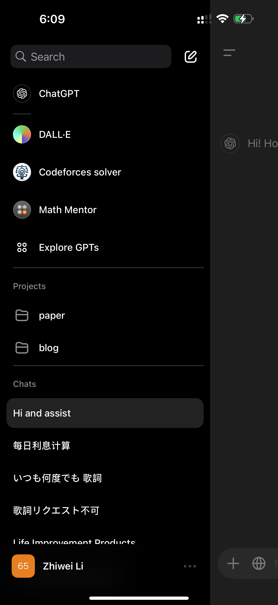

जीएफडब्ल्यू, प्रॉक्सी एपीआई, वीपीएन डिटेक्शन | मूल, AI द्वारा अनुवादित
विषय-सूची
- क्या प्रॉक्सी सर्वरों में APIs GFW प्रतिबंधों से बच सकते हैं?
- प्रॉक्सी और API ट्रैफिक को मिलाने से GFW प्रतिबंधों से बचा जा सकता है
- GFW सामान्य HTTP/HTTPS ट्रैफिक से प्रॉक्सी ट्रैफिक को अलग करता है
- GFW केवल प्रॉक्सी ट्रैफिक के आधार पर प्रतिबंध लगाता है
- GFW ट्रैफिक विश्लेषण के लिए समय खिड़की का उपयोग करता है
- नियमित रूप से API एक्सेस करने से पता लगने से रोका जा सकता है
- ग्रेट फायरवॉल (GFW) कैसे काम करता है
- GFW स्रोत और लक्ष्य डेटा के साथ अनुरोधों को लॉग करता है
- अवैध गतिविधि से जुड़े IP को प्रतिबंधित करता है
- विशिष्ट प्रोटोकॉल का पता लगाने के लिए नियमों का उपयोग करता है
- अवैध अनुरोधों के प्रतिशत के आधार पर प्रतिबंध लगा सकता है
- ट्रैफिक पैटर्न का पता लगाने के लिए AI का उपयोग करता है
- ChatGPT iOS VPN डिटेक्शन विश्लेषण
- अब ChatGPT iOS कुछ VPN के साथ काम करता है
- एक्सेस VPN सर्वर लोकेशन पर निर्भर करता है
- डिटेक्शन विशिष्ट IP एड्रेस पर आधारित है
- कुछ क्लाउड प्रोवाइडर के IP प्रतिबंधित हैं
क्या प्रॉक्सी सर्वरों में APIs GFW प्रतिबंधों से बच सकते हैं?
मैं अपने Shadowsocks इंस्टेंस पर एक सरल सर्वर चला रहा हूँ, जिसका कोड नीचे दिया गया है:
from flask import Flask, jsonify
from flask_cors import CORS
import subprocess
app = Flask(__name__)
CORS(app) # सभी रूट्स के लिए CORS सक्षम करें
@app.route('/bandwidth', methods=['GET'])
def get_bandwidth():
# eth0 के लिए 5-मिनट के अंतराल के ट्रैफिक स्टैटिस्टिक्स प्राप्त करने के लिए vnstat कमांड चलाएँ
result = subprocess.run(['vnstat', '-i', 'eth0', '-5', '--json'], capture_output=True, text=True)
data = result.stdout
# कैप्चर किए गए डेटा को JSON रिस्पॉन्स के रूप में लौटाएँ
return jsonify(data)
if __name__ == '__main__':
app.run(host='0.0.0.0', port=5000)
और मैं nginx का उपयोग पोर्ट 443 को सर्व करने के लिए करता हूँ, जैसा कि नीचे दिखाया गया है:
server {
listen 443 ssl;
server_name www.some-domain.xyz;
ssl_certificate /etc/letsencrypt/live/www.some-domain.xyz/fullchain.pem; # managed by
# ...
location / {
proxy_pass http://127.0.0.1:5000/;
# ...
}
}
यह सर्वर प्रोग्राम नेटवर्क डेटा प्रदान करता है, और मैं इस सर्वर का उपयोग अपने प्रॉक्सी सर्वर के रूप में करता हूँ, जिससे मैं अपने ब्लॉग पर नेटवर्क डेटा का उपयोग करके अपनी ऑनलाइन स्थिति दिखा सकता हूँ।
दिलचस्प बात यह है कि इस सर्वर को अब तक ग्रेट फायरवॉल (GFW) या किसी अन्य नेटवर्क नियंत्रण प्रणाली द्वारा प्रतिबंधित नहीं किया गया है। आमतौर पर, मैंने जो प्रॉक्सी सर्वर सेट अप किया होता, उसे एक या दो दिनों के भीतर प्रतिबंधित कर दिया जाता। यह सर्वर Shadowsocks प्रोग्राम को 51939 जैसे पोर्ट पर चलाता है, इसलिए यह Shadowsocks ट्रैफिक और सामान्य API ट्रैफिक के मिश्रण के साथ संचालित होता है। यह मिश्रण GFW को यह विश्वास दिलाता प्रतीत होता है कि यह सर्वर एक समर्पित प्रॉक्सी नहीं है, बल्कि एक सामान्य सर्वर है, जिससे IP को प्रतिबंधित होने से रोका जाता है।
यह अवलोकन रोचक है। ऐसा लगता है कि GFW प्रॉक्सी ट्रैफिक और सामान्य ट्रैफिक के बीच अंतर करने के लिए विशिष्ट तर्क का उपयोग करता है। जबकि चीन में ट्विटर और यूट्यूब जैसी कई वेबसाइटें ब्लॉक हैं, कई विदेशी वेबसाइटें—जैसे अंतर्राष्ट्रीय विश्वविद्यालयों और कंपनियों की—अभिगम्य बनी हुई हैं।
इससे पता चलता है कि GFW संभवतः सामान्य HTTP/HTTPS ट्रैफिक और प्रॉक्सी-संबंधित ट्रैफिक के बीच अंतर करने के लिए नियमों पर आधारित काम करता है। जो सर्वर दोनों प्रकार के ट्रैफिक को संभालते हैं, वे प्रतिबंधों से बचते प्रतीत होते हैं, जबकि केवल प्रॉक्सी ट्रैफिक को संभालने वाले सर्वर प्रतिबंधित होने की अधिक संभावना रखते हैं।
एक सवाल यह है कि GFW डेटा एकत्र करने और प्रतिबंध लगाने के लिए किस समय सीमा का उपयोग करता है—क्या यह एक दिन है या एक घंटा। इस समय सीमा के दौरान, यह पता लगाता है कि क्या ट्रैफिक केवल प्रॉक्सी से है। यदि ऐसा है, तो सर्वर का IP प्रतिबंधित हो जाता है।
मैं अक्सर अपने ब्लॉग पर जाता हूँ कि मैंने क्या लिखा है, लेकिन आने वाले हफ्तों में, मेरा ध्यान ब्लॉग पोस्ट लिखने के बजाय अन्य कार्यों पर होगा। इससे पोर्ट 443 के माध्यम से bandwidth API तक मेरी पहुंच कम हो जाएगी। यदि मुझे पता चले कि मैं फिर से प्रतिबंधित हो गया हूँ, तो मुझे इस API को नियमित रूप से एक्सेस करने के लिए एक प्रोग्राम लिखना चाहिए ताकि GFW को धोखा दिया जा सके।
ग्रेट फायरवॉल (GFW) कैसे काम करता है
चरण 1: अनुरोधों को लॉग करना
import time
# अनुरोध डेटा संग्रहित करने के लिए डेटाबेस
request_log = []
# अनुरोधों को लॉग करने के लिए फ़ंक्शन
def log_request(source_ip, target_ip, target_port, body):
request_log.append({
'source_ip': source_ip,
'target_ip': target_ip,
'target_port': target_port,
'body': body,
'timestamp': time.time()
})
log_request फ़ंक्शन आने वाले अनुरोधों को महत्वपूर्ण जानकारी जैसे स्रोत IP, लक्ष्य IP, लक्ष्य पोर्ट, अनुरोध बॉडी और टाइमस्टैम्प के साथ रिकॉर्ड करता है।
चरण 2: IP को चेक और प्रतिबंधित करना
# अनुरोधों की जांच करने और IP को प्रतिबंधित करने के लिए फ़ंक्शन
def check_and_ban_ips():
banned_ips = set()
# सभी लॉग किए गए अनुरोधों पर इटरेट करें
for request in request_log:
if is_illegal(request):
banned_ips.add(request['target_ip'])
else:
banned_ips.discard(request['target_ip'])
# सभी पहचाने गए IP को प्रतिबंधित करें
ban_ips(banned_ips)
check_and_ban_ips फ़ंक्शन सभी लॉग किए गए अनुरोधों पर इटरेट करता है, अवैध गतिविधि से जुड़े IP को पहचानता है और उन्हें प्रतिबंधित करता है।
चरण 3: अवैध अनुरोध की परिभाषा
# यह जांचने के लिए फ़ंक्शन कि अनुरोध अवैध है या नहीं
def is_illegal(request):
# वास्तविक अवैध अनुरोध जांच तर्क के लिए प्लेसहोल्डर
# उदाहरण के लिए, अनुरोध बॉडी या लक्ष्य की जांच करना
return "illegal" in request['body']
यहाँ, is_illegal जांचता है कि क्या अनुरोध बॉडी में “illegal” शब्द है। इसे अवैध गतिविधि की परिभाषा के आधार पर अधिक परिष्कृत तर्क में विस्तारित किया जा सकता है।
चरण 4: पहचाने गए IP को प्रतिबंधित करना
# IP की सूची को प्रतिबंधित करने के लिए फ़ंक्शन
def ban_ips(ip_set):
for ip in ip_set:
print(f"प्रतिबंधित IP: {ip}")
एक बार अवैध IP पहचान लिए जाने के बाद, ban_ips फ़ंक्शन उन्हें प्रतिबंधित करता है (या एक वास्तविक प्रणाली में, उन्हें ब्लॉक कर सकता है)।
चरण 5: 80% अवैध अनुरोधों के आधार पर IP को चेक और प्रतिबंधित करने का वैकल्पिक तरीका
# 80% अवैध अनुरोधों के आधार पर IP को चेक और प्रतिबंधित करने के लिए फ़ंक्शन
def check_and_ban_ips():
banned_ips = set()
illegal_count = 0
total_requests = 0
# सभी लॉग किए गए अनुरोधों पर इटरेट करें
for request in request_log:
total_requests += 1
if is_illegal(request):
illegal_count += 1
# यदि 80% या अधिक अनुरोध अवैध हैं, तो उन IP को प्रतिबंधित करें
if total_requests > 0 and (illegal_count / total_requests) >= 0.8:
for request in request_log:
if is_illegal(request):
banned_ips.add(request['target_ip'])
# सभी पहचाने गए IP को प्रतिबंधित करें
ban_ips(banned_ips)
यह वैकल्पिक तरीका मूल्यांकन करता है कि क्या किसी IP को अवैध अनुरोधों के प्रतिशत के आधार पर प्रतिबंधित किया जाना चाहिए। यदि किसी IP से 80% या अधिक अनुरोध अवैध हैं, तो उसे प्रतिबंधित कर दिया जाता है।
चरण 6: उन्नत अवैध अनुरोध जांच (उदाहरण: Shadowsocks और Trojan प्रोटोकॉल डिटेक्शन)
def is_illegal(request):
# जांचें कि क्या अनुरोध Shadowsocks प्रोटोकॉल का उपयोग करता है (बॉडी में बाइनरी-जैसे डेटा)
if request['target_port'] == 443:
if is_trojan(request):
return True
elif is_shadowsocks(request):
return True
return False
is_illegal फ़ंक्शन अब Shadowsocks और Trojan जैसी विशिष्ट प्रोटोकॉल की भी जांच करता है:
- Shadowsocks: हम अनुरोध बॉडी में एन्क्रिप्टेड या बाइनरी-जैसे डेटा की जांच कर सकते हैं।
- Trojan: यदि अनुरोध पोर्ट 443 (HTTPS) पर आता है और विशिष्ट पैटर्न (जैसे, Trojan ट्रैफिक विशेषताओं) से मेल खाता है, तो इसे अवैध के रूप में चिह्नित किया जाता है।
चरण 7: वैध अनुरोधों का उदाहरण
उदाहरण के लिए, GET https://some-domain.xyz/bandwidth जैसे अनुरोध निश्चित रूप से वैध हैं और प्रतिबंध तंत्र को ट्रिगर नहीं करेंगे।
चरण 8: प्रॉक्सी सर्वर ट्रैफिक विशेषताएँ
प्रॉक्सी सर्वरों की ट्रैफिक विशेषताएँ सामान्य वेब या API सर्वरों से बहुत अलग होती हैं। GFW को सामान्य वेब सर्वर ट्रैफिक और प्रॉक्सी सर्वर ट्रैफिक के बीच अंतर करना होता है, जो पूरी तरह से अलग दिख सकते हैं।
चरण 9: स्मार्ट डिटेक्शन के लिए मशीन लर्निंग और AI मॉडल
इंटरनेट पर गुजरने वाले अनुरोधों और प्रतिक्रियाओं की व्यापक श्रृंखला को देखते हुए, GFW ट्रैफिक पैटर्न का विश्लेषण करने और अवैध व्यवहार का पता लगाने के लिए AI और मशीन लर्निंग मॉडल का उपयोग कर सकता है। विभिन्न प्रकार के ट्रैफिक पर प्रणाली को प्रशिक्षित करके और उन्नत तकनीकों का उपयोग करके, यह अवलोकित पैटर्न के आधार पर ट्रैफिक को अधिक प्रभावी ढंग से प्रतिबंधित या फ़िल्टर कर सकता है।
अपडेट
मेरे प्रयासों के बावजूद, मेरा प्रॉक्सी सर्वर प्रतिबंधित होना जारी है। इसे कम करने के लिए, मैंने Digital Ocean की रिवर्स्ड IP सुविधा का उपयोग करके एक वर्कअराउंड लागू किया है, जो मुझे प्रतिबंधित होने पर जल्दी से एक नया IP असाइन करने की अनुमति देता है।
ChatGPT iOS VPN डिटेक्शन विश्लेषण
2024.12.26
आज मैंने पाया कि ChatGPT iOS ऐप अब चीन में VPN के साथ लॉगिन करने की अनुमति देता है। पहले, यह एक ब्लॉकिंग प्रॉम्प्ट दिखाता था, जैसा कि नीचे दिखाया गया है।
हालांकि, आज तक, यह VPN के साथ ठीक काम कर रहा है।
मैं याद करता हूँ कि जब ChatGPT iOS ऐप पहली बार जारी किया गया था, तब VPN के साथ इसका उपयोग करना कोई समस्या नहीं थी। बाद में, VPN डिटेक्शन अधिक कड़ा हो गया, जिससे लॉगिन करना मुश्किल हो गया। सौभाग्य से, लगता है कि यह प्रतिबंध हाल ही में कम कर दिया गया है।
आगे के परीक्षण में, मैंने पाया कि जब मैं DigitalOcean सिंगापुर क्षेत्र के VPN का उपयोग करता हूँ, तो मैं ऐप तक पहुंच नहीं पाता। हालांकि, जब मैं ताइवान या UK (https://zhs.cloud द्वारा प्रदान किए गए) के VPN का उपयोग करता हूँ, तो यह बिल्कुल ठीक काम करता है।
ऐसा लगता है कि ChatGPT iOS VPN डिटेक्शन विशिष्ट IP एड्रेस पर आधारित है। कुछ क्लाउड प्रोवाइडर या कुछ IP एड्रेस प्रतिबंधित हैं, जो VPN सर्वर लोकेशन के आधार पर असंगत व्यवहार की व्याख्या कर सकते हैं।

